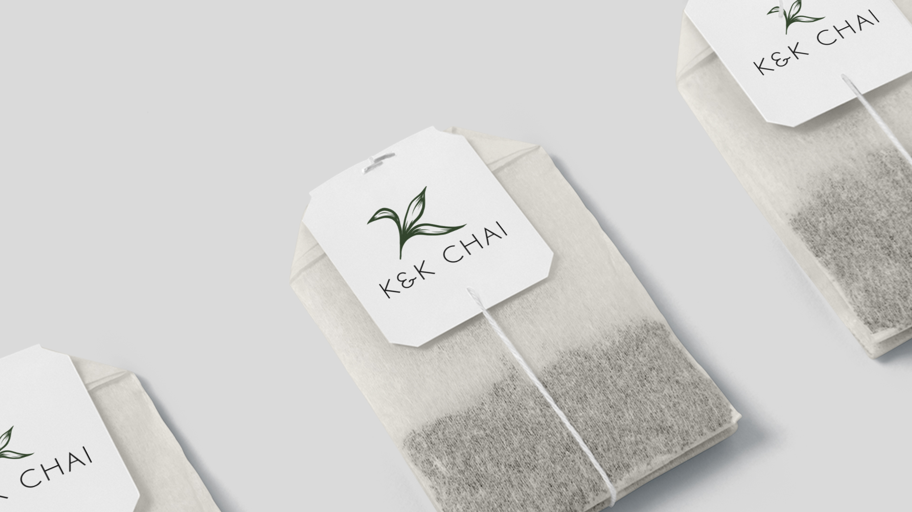
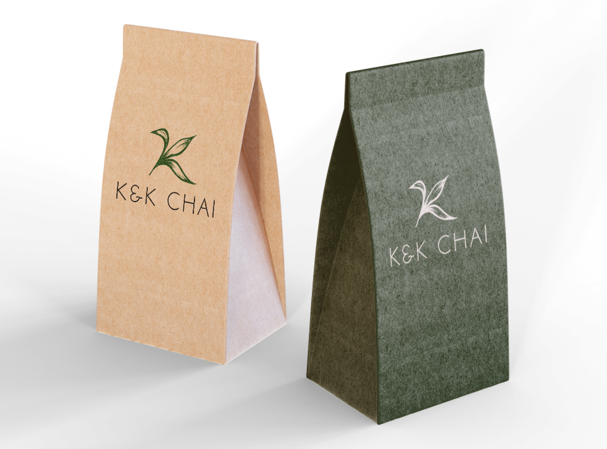

Logo Design
Grace City
Podcasting operational change management inside of workflows to establish a framework. Taking seamless key performance indicators offline to maximise the long tail. Keeping your eye on the ball while performing a deep dive on the start-up mentality to derive convergence on cross-platform integration.
- client Grace City
- date 2017
- disciplines Logo Design - Collaboration


idea & realization
Podcasting operational change management inside of workflows to establish a framework. Taking seamless key performance indicators offline to maximise the long tail. Keeping your eye on the ball while performing a deep dive on the start-up mentality to derive convergence on cross-platform integration.